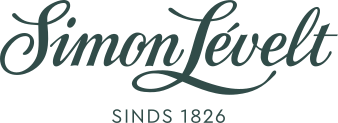

홈 > 브랜드 매거진 > Simon Lévelt
Simon Lévelt
시몬 레벨트(Simon Lévelt)는 6대째 가족이 운영하는 네덜란드의 커피 로스팅·차 블렌딩 전문 기업이다.
산업 분야 식음료 · 공개 등급 자료 기반 · 브랜드 평가 4.1 ★

한눈에 보는 브랜드
시몬 레벨트는 네덜란드의 커피·차 전문 로스터 겸 소매 브랜드로, 식민지 물품 상인 시몬 레벨트(1775~1850)가 1817년 무렵 사업을 시작하고 1820년대 암스테르담 항구 인근에 상점을 연 데서 비롯되었다. 약 2백 년에 걸쳐 6대째 가족이 운영하며, 1920년대 디카페인 커피 도입과 1970년대 말 유기농 전환이라는 두 전환점을 거쳐 네덜란드와 벨기에에 40여 개 전문 매장을 둔 회사로 성장했다.
브랜드 관점
시몬 레벨트의 핵심은 약 2백 년을 이어온 가족 경영과, 대형 식품기업이 유기농을 받아들이기 훨씬 전인 1970년대 말부터 멕시코 커피·인도 차 농가와 직접 거래하며 유기농·공정무역을 사업의 중심에 둔 선구성이다. 대량 생산 대신 자체 로스팅과 소량 직거래로 품질과 투명성을 묶고, 프랜차이즈 전문 매장과 유기농 슈퍼마켓 납품을 병행해 규모와 장인성을 동시에 확보했다.
1인당 커피 소비가 세계 최고 수준인 네덜란드 시장에서 윤리적 소비 흐름을 일찍 선점한 점은, 가격 경쟁이 아닌 가치 기반 차별화가 장수 브랜드를 만든다는 함의를 준다. 지속가능성과 원산지 투명성을 중시하는 한국 독자에게는, 오래된 가업이 시대 가치를 결합해 재해석된 사례로 읽힌다.
시작과 성장
19세기 초 네덜란드는 식민지 무역으로 커피·차가 대량 유입되던 시기였다. 콜로니얼 상품 상인이던 시몬 레벨트(1775~1850)는 1817년 무렵 사업을 일으켰고, 1820년대 암스테르담 옛 항구 인근에 커피와 차를 포함한 식민지 물품 상점을 열었다.
1850년 아들 야코프가 합류하며 개인 고객을 넘어 소매점·요식업으로 판로를 넓혔고, 이후 세대가 자가 로스팅 기술을 가다듬으며 전문성을 축적했다. 두 차례 큰 전환점은 1920년대 화학자 출신 후계자가 네덜란드에 디카페인 커피를 들여온 것, 그리고 1970년대 한 후계자가 카보베르데·멕시코·인도 산지를 직접 방문한 뒤 1970년대 말부터 유기농 커피·차를 들여오며 친환경 노선으로 방향을 튼 것이다.
1995년 본거지를 하를럼으로 옮기며 로스팅·차 포장 거점을 정비했고, 네덜란드를 넘어 벨기에까지 매장을 확장하며 국제 로스터로 자리 잡았다.
브랜드 아이덴티티
브랜드 가치는 장인성, 유기농·공정무역, 산지 직거래의 투명성에 뿌리를 둔다. 자체 로스터리에서 매일 볶고 블렌딩·분쇄하는 방식으로 품질을 관리하며, '2백 년의 커피·차 열정'이라는 서사로 오랜 가업의 진정성을 전한다.
비주얼 아이덴티티는 절제된 워드마크와 전통적 전문점 분위기를 결합해 신뢰와 전문성을 드러낸다. 타깃은 가격보다 원산지·윤리·맛의 깊이를 중시하는 의식 있는 소비자이며, 보이스는 과장 없이 차분하고 교육적이어서 제품의 출처와 가치를 설명하는 데 무게를 둔다.
제품과 서비스
취급 품목은 유기농 비중이 높은 원두커피와 디카페인, 다양한 산지별 잎차·허브차·티백, 그리고 그라인더·여과지·티포트 등 추출 용품과 선물 세트다. 채널은 네덜란드와 벨기에의 프랜차이즈 전문 매장을 중심으로, 자가 로스터리 직판과 유기농·일반 슈퍼마켓 납품, 온라인 판매를 함께 운용한다.
현재 상태
본사는 1995년 이후 네덜란드 하를럼에 있다. 지배구조는 비상장 가족기업으로, 창업가 가문 6대째인 미켈 레벨트가 공동 경영 체제로 회사를 이끌며 일가의 첫 여성 경영자로 알려져 있다.
국가는 네덜란드이며, 유기농 비중 확대를 목표로 네덜란드·벨기에에서 전문 매장과 로스팅 사업을 지속하고 있다. 구체적 매출·지분 비율 등 세부 수치는 미공개.
타임라인
정리된 연도형 이벤트가 없습니다.
BI/CI 변천사
함께 읽을 브랜드
*o
*ouch*
식음료 · 편집 검수*ouch**ouch*는 2025년에 기록된 Burger Branding 계열의 브랜드 아이덴티티 사례입니다. Oker가 아이덴티티 작업의 디자이너로 기록되어 있습니다. 공개...
TK
더본코리아
식음료 · 자료 기반더본코리아더본코리아는 백종원이 이끄는 한국의 외식 프랜차이즈 기업으로, 빽다방·홍콩반점·새마을식당·한신포차 등 다수의 외식 브랜드를 한 회사 안에서 운영한다. 가맹사업을 중심...
Dr
Drumroll
식음료 · 편집 검수DrumrollDrumroll는 2024년에 기록된 Food Brands 계열의 브랜드 아이덴티티 사례입니다. Gander가 아이덴티티 작업의 디자이너로 기록되어 있습니다. 공개...
Sa
Sauce Shop
식음료 · 편집 검수Sauce ShopSauce Shop는 2025년에 기록된 Food Brands 계열의 브랜드 아이덴티티 사례입니다. B&B Studio가 아이덴티티 작업의 디자이너로 기록되어 있습니...
TE
테라로사
식음료 · 자료 기반테라로사테라로사는 2002년 강원도 강릉에서 출발한 한국 1세대 스페셜티 커피 로스터리다. 산지에서 들여온 생두를 강릉 커피공장에서 직접 볶아 전국 직영 매장과 기업 거래처...
 식음료 · 매거진 완성스타벅스
식음료 · 매거진 완성스타벅스스타벅스는 커피를 팔면서 동시에 사람들이 머무는 시간과 공간의 감각을 설계한다. 음료는 핵심 상품이지만, 브랜드의 차별성은 매장 안에서 보내는 시간, 주문 언어, 조...
Be
Bezi
식음료 · 편집 검수BeziBezi는 2024년에 기록된 Food Brands 계열의 브랜드 아이덴티티 사례입니다. Red Antler가 아이덴티티 작업의 디자이너로 기록되어 있습니다. 공개...
Ce
Ceria
식음료 · 편집 검수CeriaCeria는 2022년에 기록된 Soft Drinks 계열의 브랜드 아이덴티티 사례입니다. Mother Design가 아이덴티티 작업의 디자이너로 기록되어 있습니다....